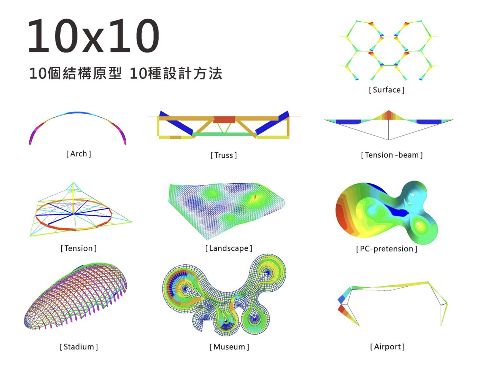
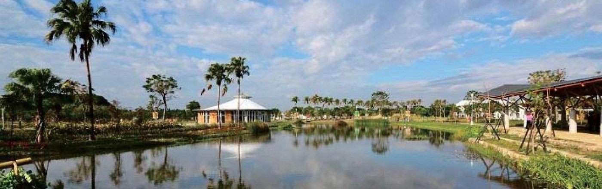
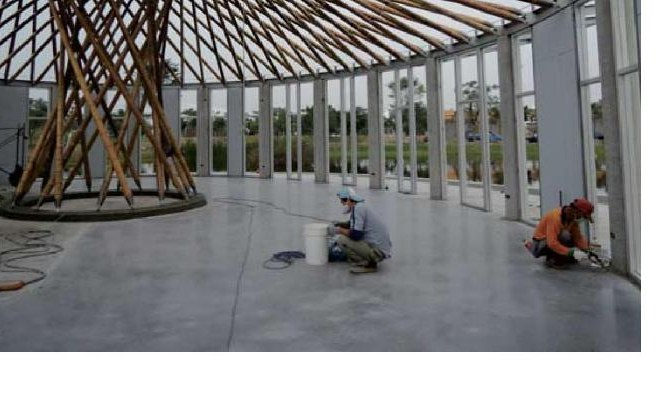
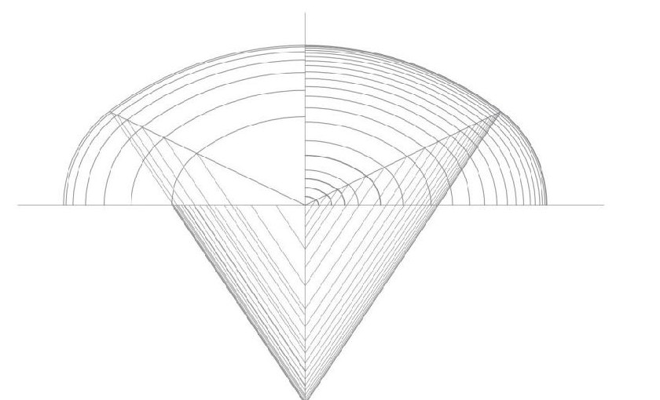
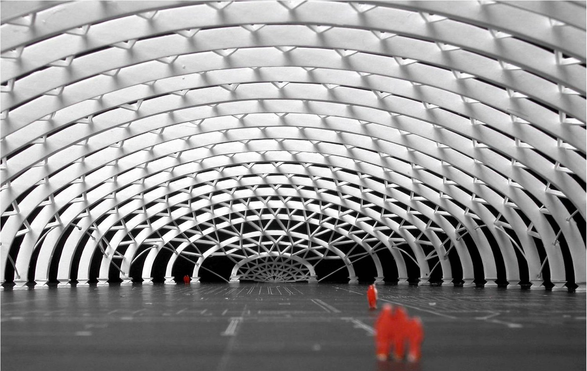
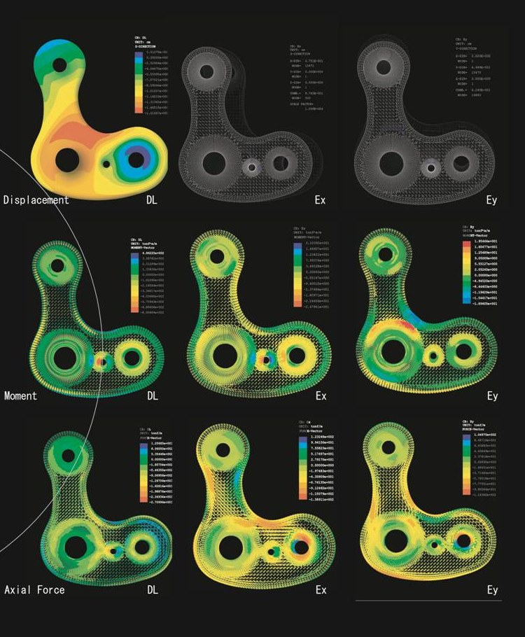
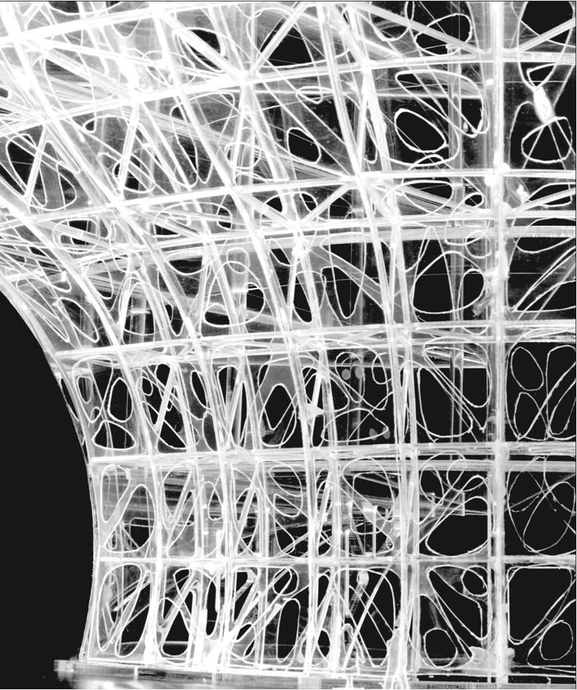
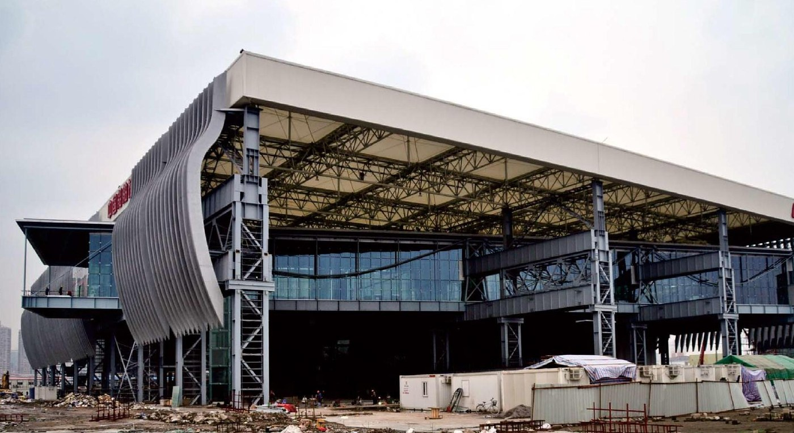
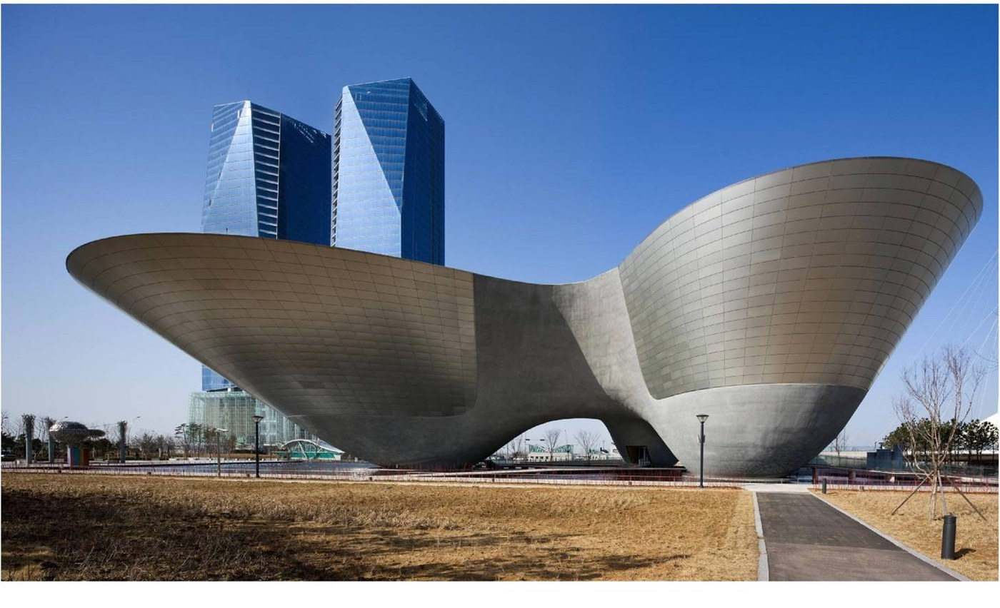
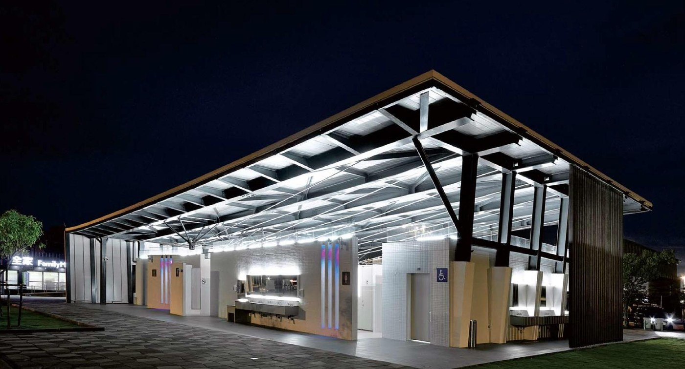

{{ item.en }}
{{ item.zh }}
原型方法

構｜組構・幾何
「構」是原型對建築最初的理解，從組構關係與幾何秩序開始，尋找空間、材料與力量之間的基本關係。結構不是附加於建築的技術，而是形成建築的起點。透過幾何學找尋尺度、比例、形體與受力邏輯，建立清晰而具有秩序的空間骨架，使幾何成為可被感知的結構語言。
水平不只是地平線向度的延伸，也是結構跨越兩端的思考，除了本身構成的纖細美感，還要考慮結構工學在形式與系統上的支撐。
曼妙地身軀往上攀爬，當建築追求高度的表現之下，又賦予地表甚麼意義？是無限慾望延伸，還是充滿向上努力的姿態，不管如何，當不斷攀延的高塔建築呈現動人的體態時，那是一種纖細之美。
構，不僅是組合的關係理解而是精準幾何的建構。
法｜方法・系統
「法」是將想法轉化為設計的方法。原型從條件、材料、結構與施工出發，建立可理解、可推演、可重複的設計系統。方法不是限制創意，而是讓創意具備實現的邏輯；透過系統化思考整合不同尺度與專業，使每一個設計決定都有依據，讓建築從概念逐步走向清晰。
同樣是水平跨越，六角形之旋轉，轉置了結構思維。相同的條件下，因為「構法＋幾何學」之不同，演繹出不一樣的設計。
隨著地景變化的結構體，透過立體空間桁架構造得以呈現，所不同的是，它不僅僅是屋頂結構體，同樣也是地景建築上部的遊走空間。幾何的蔓妙線條讓整個空間有趣活潑了起來。
雲林農業博覽會
農博的精神其實並不是建築，而是大地！因此結構的語彙自然導向了最呼應大地的材料，又或是一直以來被我們所遺忘、但是卻又是台灣長期豐富資源的竹子！透過「竹構築」與「結構原型」，我們實現了它。


法，是系統化的極致表現。
章｜原型・構築
「章」是原型對自己論述的建立，也是從方法走向構築的過程。萬物皆以原型誕生，並皆從材料、結構、尺度與細部中尋找自身的秩序，形成獨立而可辨識的構築章法。原型的意涵不追求形式的複製，而是從條件中提煉規律，讓每一次設計成為對建築本質的一次重新詮釋。
拱原型－青島國家游泳館設計案
拱的「結構原型」是一種受壓機制，因為會受到上下左右各方向之受力作用，形成剖面中原型之不同受力狀態，而這狀態就是結構設計原型的起點。當我們知道受力的分佈時，就可以因應它的變化給予相應的結構設計。

僅由單純「拱之結構原型」，試圖創造出充滿魅力的大跨度空間。每道拱藉由原型去分析其受力之狀態，也因此形構出大大小小不同斷面拱的存在，整體的力學結構因而清晰動人。

仿生結構
仿生結構的特徵之一，是可以透過電腦將結構解析的結果原封不動地嫁接到結構形態上，這樣所使用的鋼材量將達到必要的最小限度。比如在以往的空間網架結構中，是將結構解析的結果系統化後選擇其中的最大值然後決定材料的尺寸，因此沒有必要使用最大值的部分也都過度使用了大斷面材料，從而造成浪費。為了對此進行反省，終於產生了自然界已有的必然的結構原理——仿生結構。因此，仿生結構是有史以來資材使用最少、覆蓋空間最大，而且可以被支撐的事物。為了最大限度地利用電腦來進行鋼結構的生產和安裝，有必要採用立體幾何學來徹底實現仿生結構，結構形態的幾何性整理是必要不可缺少的。

仿生結構由「外皮」和「內皮」雙重構造所構成，無論哪一層都是剪切薄鐵皮而形成的，透過電腦解析後決定外皮和內皮之間最為適宜的間隔尺寸，因此這種間隔在不同部位尺寸都不同。外側和內側描繪著二維曲線，然後用螺栓或焊接將外皮和內皮組裝，從而自然地形成三維曲面。充分利用電腦精確切割、展開圖繪製等技術的話，造價低、工期短，而且用最少量的鋼材都能夠被實現。

章，是用於原型的探索與創造。
成｜落地・實踐
「成」是設計真正完成的時刻，也是原型最重視的實踐。一個經典構造物必然經歷設計思考與時間的驗證，但唯有從圖紙上轉化成真實討論的條件才能成為真實的建築。原型重視從圖面到現場的每一個環節，讓設計經得起製作、建造與使用的考驗，使思想最終落地，讓建築真正成為可以被使用、感受與延續的作品。
上海世界博覽會 中國船舶館
在SDG構造設計集團在職期間，2010年歷經了上海世界博覽會的建築工地，深知再好的設計沒有真實地被實踐出來，最後可能只是一張設計圖。而結構原型理念，就是要導入合理的結構設計方法，讓建築能夠被予以實踐。

韓國仁川會展中心
一個導入預力思維的結構作品，特色在於藉由一圈一圈的預力，緊箍牢牢扣住每一圈混凝土，而環向與縱向的預力作用，讓懸挑的尺度達到最大——預力混凝土壁體結構。

新營服務區公共廁所
一座位於高速公路服務區的公廁，究竟它應該怎樣被對待？我們思考著這個問題：它是否應該就像人們穿越高速公路般如風疾馳？又或者它是條順應著高速曲率、滑順的曲線？不管如何，輕盈如風般飛翔的結構屋頂，就像是這條高速公路告訴我們的語言——人們快速地來去，輕盈地不留一點痕跡。

成，是致力於將想法實踐出來。